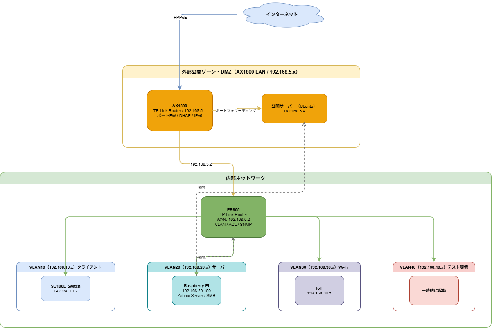

Termnix-IT Diagram Gallery
構築の設計を図で残す
個人プロジェクトや学習の中で作成したシステム構成図をまとめています。あとから自分でも見返せるよう、構成・経路・制御点を整理しています。
Network
Linux
Security
diagram-01 / on-premises
オンプレネットワーク構成図
AX1800 配下の DMZ（192.168.5.x）に外部公開ホストを隔離し、内部は ER605 を境界に VLAN10/20/30/40 へ分割した構成。ゾーン間は ACL で制御し、VLAN20 の Raspberry Pi に置いた Zabbix Server から ER605 と公開サーバを監視しています。

upcoming
今後の追加予定
AWS 上のサーバレス構成図、ネットワーク検証構成図など、今後作成する構成図をここに追加していきます。